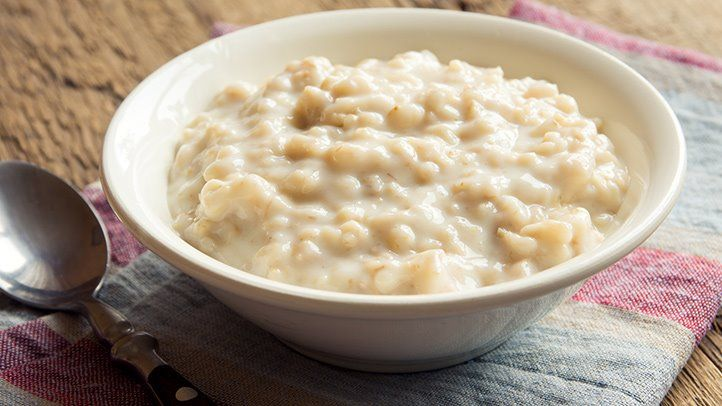

This is a simple recipe for oatmeal. All ingredients have a long shelf life even once opened, so I like to keep them on hand for those mornings I realize I ran out of eggs. It can easily be customized with different toppings, so you can never get tired of it!
Ingredients
- 1 1/3 cups of water
- 2/3 cups oats
- 1 small handful of raisins
- 1 tablespoon maple syrup
- 1/2 teaspoon vanilla extract
- 1/4 teaspoon apple pie spice mix
Steps
- Add the water, vanilla and raisins to a small saucepan and begin heating on medium heat
- Once the water begins to simmer, add the oats and stir
- After a minute when the oats have absorbed most of the water, reduce the heat and stir in the spice mix and maple syrup
- Once the oatmeal has reached the desired consistency, it is ready to serve
- (Optional) You can add some extra maple syrup if you like it sweeter, and if it isn't filling enough you can dip a slice of buttered toast in it